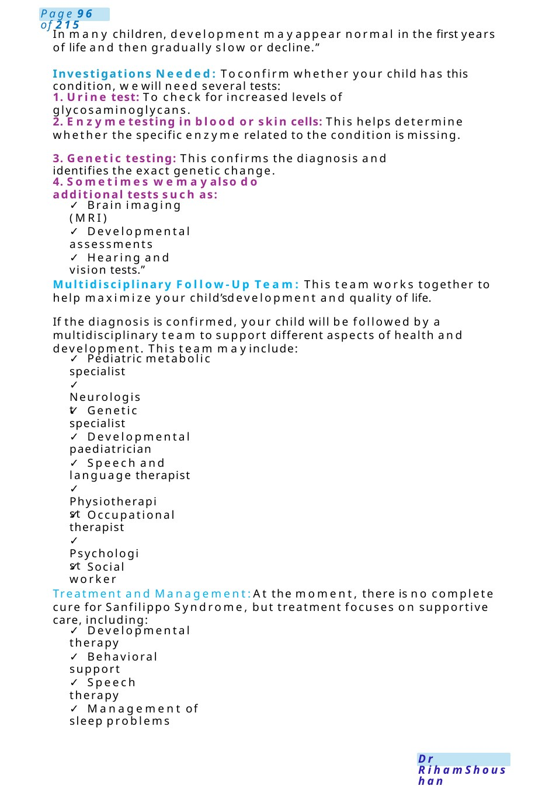
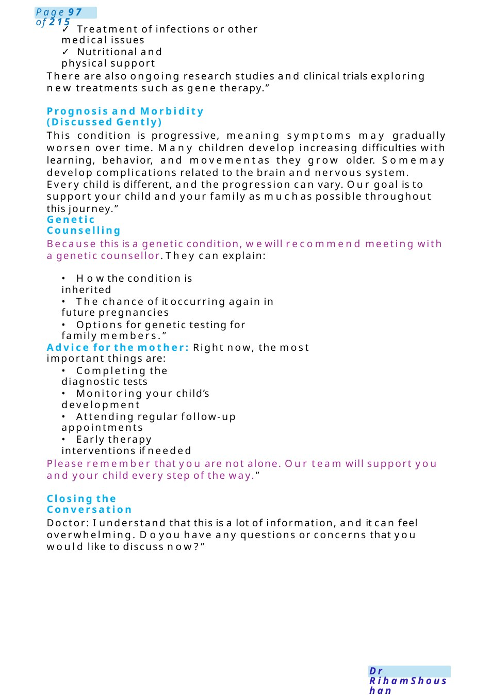

Sanflippo Syndrome
Communication Task: Explaining Suspected Sanfilippo Syndrome to a mother Scenario: You are a paediatric doctor speaking with the mother of a child who has coarse facial features and developmental concerns. Based on the clinical findings, you suspect Sanfilippo Syndrome. The mother is anxious and wants to understand the condition, the investigations needed, the treatment options, and what the future maylook like.
Scenario Summary
Communication Task: Explaining Suspected Sanfilippo Syndrome to a mother Scenario: You are a paediatric doctor speaking with the mother of a child who has coarse facial features and developmental concerns. Based on the clinical findings, you suspect Sanfilippo Syndrome. The mother is anxious and wants to understand the condition, the investigations needed, the treatment options, and what the future maylook like.
Full Original Scenario

Sanflippo Syndrome
Communication Task: Explaining Suspected Sanfilippo Syndrome to a mother
Scenario: You are a paediatric doctor speaking with the mother of a child who has coarse facial features and developmental concerns. Based on the clinical findings, you suspect Sanfilippo Syndrome. The mother is anxious and wants to understand the condition, the investigations needed, the treatment options, and what the future maylook like.
Opening the Conversation
Doctor: Thankyoufor comingtoday. I understand that youmaybe worried about someof the features wenoticed in your child. I would like to explain what we are thinking about and what the next steps will be. Please feel free to stop meat any time if something is unclear.”
Explaining the Condition: Based on your child’s facial features and developmental history, one condition we are considering is called Sanfilippo Syndrome.This is a rare genetic metabolic disorder where the body is missing or has very low levels of certain enzymes that help break down complex sugars in the body. These sugars, called glycosaminoglycans, gradually build up in different organs, especially in the brain.”
Typical Features of the Disease: This condition maycause several features, including:
- Developmental delay or regression
- Behavioural changes or hyperactivity
- Sleep problems
- Coarse facial features
- Mild enlargement of the liver or spleen in some cases
- Learning difficulties over time

In many children, development mayappear normal in the first years of life and then gradually slow or decline.”
Investigations Needed: Toconfirm whether your child has this condition, wewill need several tests:
1. Urine test: To check for increased levels of glycosaminoglycans.
2. Enzymetesting in blood or skin cells: This helps determine whether the specific enzyme related to the condition is missing.
3. Genetic testing: This confirms the diagnosis and identifies the exact genetic change.
4. Sometimes wemayalso do additional tests such as:
- Brain imaging (MRI)
- Developmental assessments
- Hearing and vision tests.”
Multidisciplinary Follow-Up Team: This team works together to help maximize your child’sdevelopment and quality of life.
If the diagnosis is confirmed, your child will be followed by a multidisciplinary team to support different aspects of health and development. This team mayinclude:
- Pediatric metabolic specialist
- Neurologist
- Genetic specialist
- Developmental paediatrician
- Speech and language therapist
- Physiotherapist
- Occupational therapist
- Psychologist
- Social worker
Treatment and Management:At the moment, there is no complete cure for Sanfilippo Syndrome, but treatment focuses on supportive care, including:
- Developmental therapy
- Behavioral support
- Speech therapy
- Management of sleep problems

- Treatment of infections or other medical issues
- Nutritional and physical support
There are also ongoing research studies and clinical trials exploring new treatments such as gene therapy.”
Prognosis and Morbidity (Discussed Gently)
This condition is progressive, meaning symptoms may gradually worsen over time. Many children develop increasing difficulties with learning, behavior, and movementas they grow older. Somemay develop complications related to the brain and nervous system.
Every child is different, and the progression can vary. Our goal is to support your child and your family as muchas possible throughout this journey.”
Genetic Counselling
Because this is a genetic condition, wewill recommend meeting with a genetic counsellor. They can explain:
- Howthe condition is inherited
- The chance of it occurring again in future pregnancies
- Options for genetic testing for family members.”
Advice for the mother: Right now, the most important things are:
- Completing the diagnostic tests
- Monitoring your child’s development
- Attending regular follow-up appointments
- Early therapy interventions if needed
Please remember that you are not alone. Our team will support you and your child every step of the way.”
Closing the Conversation
Doctor: I understand that this is a lot of information, and it can feel overwhelming. Doyou have any questions or concerns that you would like to discuss now?”

Paracetamol Overdose
MRCPCH-stylecommunication scenario with a teenager after paracetamol overdose Setting: Emergency department / paediatric ward
Role Player (Patient) 15-year-old girl (Sara) Took paracetamol tablets intentionally ~6 hours ago. Tearful, withdrawn, initially reluctant to talk
Candidate Instructions: Youare the paediatric trainee.
TASK:Youare asked to Talk to Sara after she took paracetamol intentionally, explore whathappened, Explain risks including toxic dose and complications. Provide support, safety, and next steps
Hi Sara, myname is Dr ...,one of the doctors looking after you today. I’mreally glad you’re here so wecan help you. Would it be okay if wetalk for a bit about what happened?”
Acknowledge Emotions:
Sara: Quiet, avoids eye contact. “I just took some tablets...I don’t know”
Candidate: I understand this might be really hard to talk about.You don’t have to go through this alone—I’m here to listen.”
Sara: I’ve been really stressed...school... family... everything”. I didn’t think it would matter”
Open Exploration: “Can you tell mewhat happened earlier today.“Was this something you planned, or did it happen suddenly? “Have you been feeling low or overwhelmed recently?”